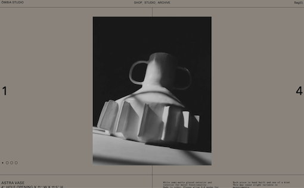
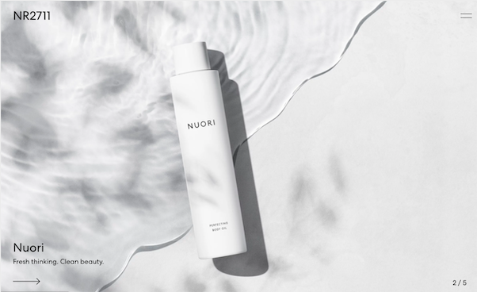

I plan to improve my Studio 2 Every Picture
Project because I wish I could have done a
better job showcasing my whole 30 diet journey.
I plan to utilize pictures, videos, and audio
for the final’s revision as well as improving
the calendar view I attempted to go with by
adding more animation.
Comparison Project 1:

visit site credit
I thought this website would be a good comparison
to my final project idea because of the gallery style.
The user scrolls through a simple gallery of pictures
and when they interact with them, users are able to
see more details about the images.
Additionally, the line animation smoothly done by this site
also works well in slowing down the scrolling action.
I also really like how subtle the buttons are displayed to
slide through the images in a presentation slide.
What I would do to improve is to change the color scheme
and simplify the website even more. I would like to make
the website as easily readable as possible, retaining the
user attention and ensuring that most of their attention
would be focused on the images and the stories I’m sharing.
Comparison Project 2:

visit site credit
This website has many interesting web design ideas I observed.
Upon entering the site, the user sees multiple images and videos
that were quickly switched out in full screen mode.
This is exactly what I was attempting for during Studio 2.
As the user scrolls down, this portfolio site demonstrates all
the projects that have been done. This is something I imagine
my website to have - as my users scroll through the pages,
the images or videos in the center will change while there’s a
background frame around the images that display the “calendar” view
and count down to show how far the user is going.
The overall design is a good user experience as they’re walking through
a gallery of pictures with stories one by one with a tour guide.
By clicking on those images, users can also further explore the
stories behind these images if they find them interesting.
I would say that this website has the core idea of
what I want my website to look like!
Project Goals
My goal is to create a website with a minimalistic calendar look
that documents my whole 30 journey. The site would have a gallery view
of the “highlight” of what I had during this diet done in a
similar way like the two comparison projects.
What makes the difference is that my site should have that emphasis
on the UI with the calendar overall interface that surrounds
the images and videos most of the time. I wish to achieve
this documentation of my diet in an interactive way in a
gallery/calendar view.
Design Strategies
My strategy is to make the site look simple and colorful - something
that might remind one with Google Calendar perhaps. I want the
user to enjoy the website’s look and have fun exploring the different
highlights I would put in different dates on the calendar.
Interaction Strategies
The user should have plenty of interaction with the calendar
navigation bar with hovering, image enlarging, and scrolling effects.
I also plan to add sound feedback when users select or click on
certain dates or images to enhance the user's experience in interacting
with the site.
Experience Goals
My goal is for my audience to enjoy the process of exploring
my personal experience with doing a whole 30 diet in a fun, engaging way.
I wish the user would walk away remembering not only about my stories,
but that they had spent enough time exploring the different functions
and buttons on the site.